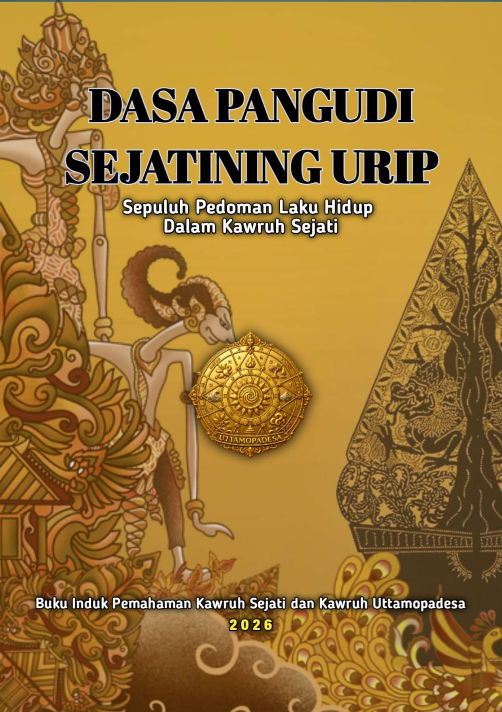

Buku
Dasa Pangudi Sejatinining Urip
Sepuluh Pedoman Laku dalam Kawruh Sejati
Deskripsi Buku
Buku Dasa Pangudi Sejatinining Urip: Sepuluh Pedoman Laku dalam Kawruh Sejati merupakan dokumen konseptual yang memaparkan sepuluh pedoman kehidupan dalam kerangka Kawruh Sejati dan pengembangan Kawruh Uttamopadesa. Pemaparan ini berangkat dari pemahaman bahwa kehidupan manusia tidak cukup dijalani melalui pemenuhan kebutuhan jasmani, pelaksanaan kebiasaan, atau pencapaian keberhasilan lahiriah. Manusia juga perlu memahami arah kehidupannya, mengenali keadaan dirinya, mempertimbangkan akibat tindakannya, serta mengupayakan perilaku yang selaras dengan nilai-nilai kehidupan.
Tentang Buku
Dasa Pangudi Sejatinining Urip mengangkat sepuluh pedoman laku sebagai bagian dari upaya memahami dan menjalani kehidupan berdasarkan Kawruh Sejati. Pedoman-pedoman tersebut menjadi landasan untuk meninjau hubungan manusia dengan kehidupan, tanggung jawab terhadap sesama, serta kesungguhan dalam menata diri.
Buku ini menempatkan pemahaman dan pengamalan sebagai dua hal yang berkaitan. Kawruh tidak hanya dipahami sebagai pengetahuan, tetapi juga sebagai dasar untuk menimbang tindakan dan memperbaiki perilaku dalam kehidupan sehari-hari. Dengan demikian, pembahasan Dasa Pangudi diarahkan pada penghayatan nilai-nilai kehidupan, bukan sekadar pengenalan terhadap konsep-konsepnya.